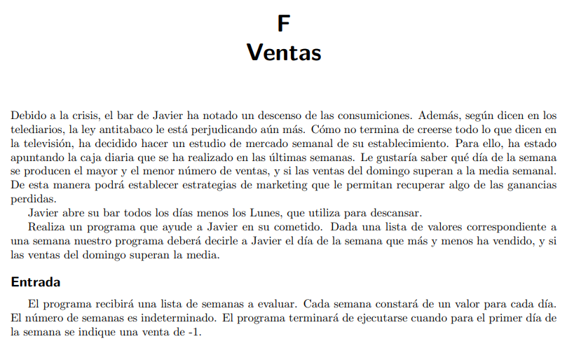
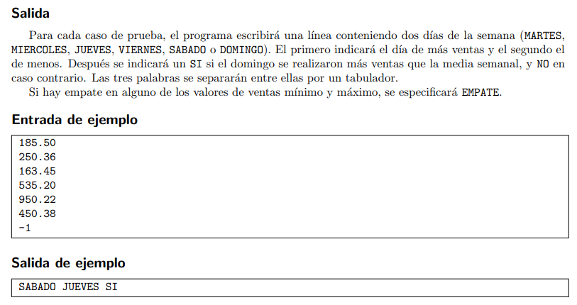

Ejercicio 1
Implementa un método que, dado un número entero, calcule el cubo (N3). Realiza un programa principal que pregunte un número N al usuario, llame al método e imprima el resultado que este devuelve.
Implementa un método que, dado un número entero, calcule el cubo (N3). Realiza un programa principal que pregunte un número N al usuario, llame al método e imprima el resultado que este devuelve.
Implementa un método para mostrar un menú de N opciones con su número correspondiente. La última opción será para salir. Realiza un programa principal que imprima el menú y pida la opción al usuario, comprobando que esta sea válida.
a) Implementa un método (1) para pasar a mayúsculas una cadena.
b) Implementa otro método (2) para contar las vocales de una cadena.
c) Realiza un programa principal que pida una cadena al usuario, se la pase al método (1) e imprima lo que devuelve (una palabra en mayúsculas).
d) Haz que el programa llame también al método (2) con la palabra resultado del método (1) en mayúsculas para que cuente las vocales e imprima la cantidad que este devuelve.


Resuelve el problema implementando los siguientes métodos:
a) Método que permita al usuario introducir la recaudación de una semana y devuelva los datos en un vector.
b) Método que a partir de la lista creada en el apartado anterior con los importes diarios, devuelva el día de más ventas.
c) Método que a partir de la lista creada en el apartado a) con los importes diarios, devuelva el día con menos ventas.
d) Método que calcule la media semanal.
e) Método que devuelva la recaudación del domingo.
Obra publicada con Licencia Creative Commons Reconocimiento Compartir igual 4.0